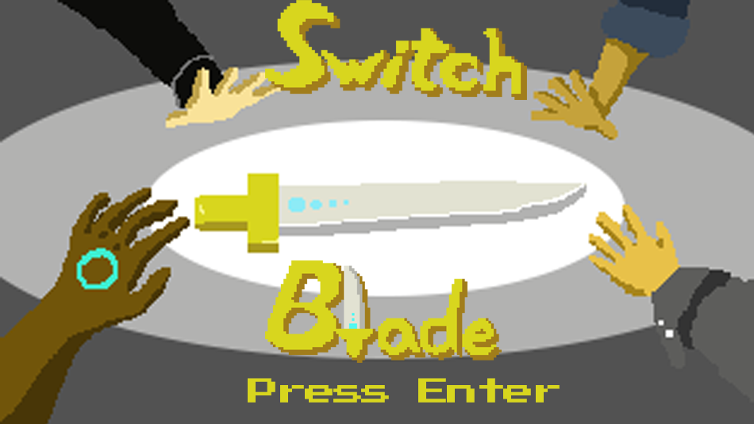
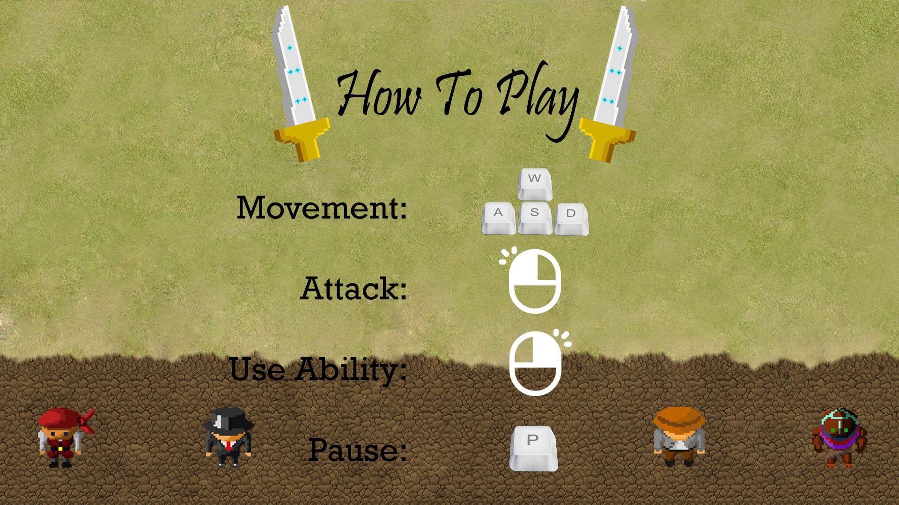

SwitchBlade
I created this game as a group project during my Freshman year at RIT. The gameplay consisted of following a sword as it changed hands during battle.
It was made with C# and featured a custom character creation tool, four character special abilities, and a procedurally generated map and path that used a custom implementation of Perlin noise.

